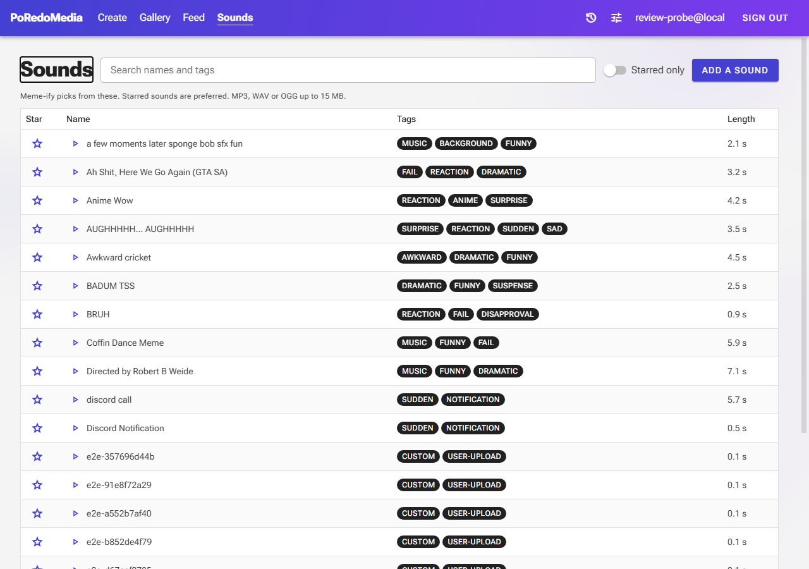
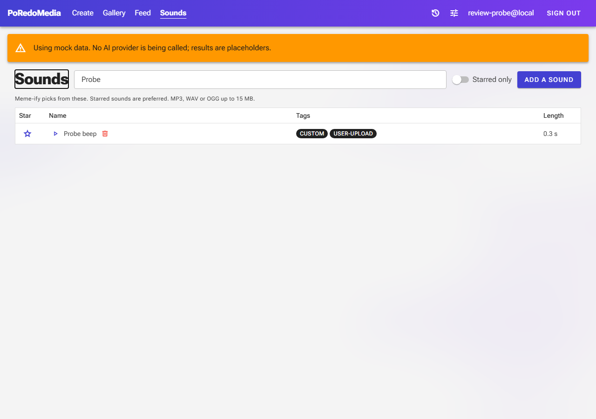
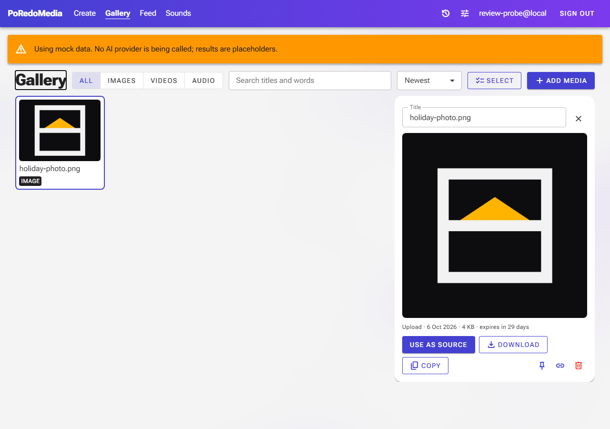

6 October 2026. Left is before, right is after. Yellow numbers mark what is new. Captured at 1280×900 against a local
mock-AI instance, which is why the "after" pictures carry the orange mock banner. The signed-in user is a throwaway
test account.
Sounds: an uploaded sound can be deleted
Before: no way to remove an upload, so the 25-sound limit never freed up

After: the list searched for one uploaded sound

1
1 A delete button on the user's own uploads only. It asks before deleting. Sounds from the shared
library have no button.
Gallery: the details say when an item expires
After (before, the line ended at the size)

2
2 An unpinned item shows how long it has left. A pinned one says "pinned" as before. The share dialog
repeats it: "This item expires in N days, and the link stops working with it. Pin the item to keep both."
Changed, not pictured
Create, while a run is going: a "Cancel the run" button with the line "Results already made are kept. A run
that made nothing is not charged." Not captured, because a mock run ends before a screenshot can be taken.
Create, remix banner: "Cancel the remix" is a button that also removes the remix from the run.
Gallery details: the GIF button is disabled while the GIF is being made, and a refusal appears as a
notification.
Gallery: downloading more than 50 items or 1 GB at once shows a warning and downloads nothing.
Media picker: a video longer than a minute is refused with its reason before the upload starts.